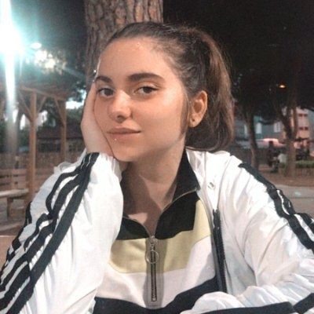

Hakkımda
Merhabalar ben İrem Bulum. 04.07.2000 tarihinde İstanbul'da doğdum.İlkokulu Şehit
Üsteğmen Gökhan Yavuz İlköğretim okulunda okudum.
Liseyi de Türk Kızılayı Kartal Anadolu Lisesi'nde okudum. Şu anda da Uludağ Üniversitesi 2.sınıf Bilgisayar Program-
cılığı bölümünü okuyorum.
Bu projeyi Web Projesi Yönetimi dersi kapsamında geliştirdim.